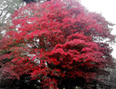

Tại sao lá cây có màu đỏ vào mùa thu

Do màu vàng thu hút sự chú ý của côn trùng có hại, nhiều loài cây đối phó bằng cách tự nhuộm đỏ lá của chúng để giảm bớt tổn thất vào mùa thu, càng tôn thêm nét lãng mạn đầy màu sắc của mùa này trong năm.